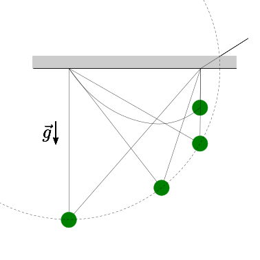

Problemi#
Data la massa \(m\) della massa puntiforme appeso tramite due fili inestensibili ideali di lunghezza \(L_1\) e \(L_2\) note, si calcolino le reazioni a terra.

Soluzione.
Data la massa \(m\) della massa puntiforme appeso tramite due fili inestensibili ideali di lunghezza \(L_1\) nota e \(L_2\) variabile, si calcolino le reazioni a terra in funzione della lunghezza del filo \(2\).

Soluzione.
Data la massa \(m\) della massa puntiforme appeso tramite un filo inestensibile ideale di lunghezza \(L\) e una molla di costante elastica \(k\) e lunghezza a riposo \(x_0\) collegata a terra in un punto distante \(H\) dal punto a terra dove è collegato il filo, si calcoli:
la posizione del punto
la lunghezza della molla
le reazioni vincolari a terra nella configurazione di equilibrio.
Soluzione.
Data \(m\), \(\mu^s\), trovare l’angolo massimo \(\theta_{\max}\) per il quale esiste una condizione di equilibrio.
Soluzione.
Data \(m\), \(M\), \(\mu^s\) tra i due solidi, si chiede di calcolare:
la risultante delle azioni scambiate tra i due corpi
la risultante delle reazioni vincolari a terra agenti sul solido blu,
nella condizione di equilibrio del sistema, nell’ipotesi che l’attrito tra solido blu e terra sia trascurabile. Verificare le condizioni limite tra \(\theta\) e \(\mu^s\) affinché l’equilibrio sia possibile
Soluzione.
Data la massa \(m\) del blocco rosso, la costante elastica \(k\) della molla lineare ideale, con lunghezza a riposo \(\ell_0\), viene chiesto di:
determinare la lunghezza della molla nella condizione di equilibrio, nell’ipotesi che l’attrito tra blocco rosso e piano inclinato sia trascurabile
determinare le possibili condizioni di equilibrio, nell’ipotesi che l’attrito statico tra blocco rosso e piano inclinato sia \(\mu^s\)

Soluzione.
Data la massa \(m\) del blocco rosso, il raggio \(R_1\), \(R_2\) delle due carrucole, si chiede di determinare la forza \(\vec{F}\) da applicare nella condizione di equilibrio, nell’ipotesi di fili inestensibili e carrucole ideali e senza massa.
Si chiede poi di ripetere il calcolo nell’ipotesi in cui la massa delle carrucole non sia trascurabile, ma siano \(M_1\) per la carrucola vincolata a terra, e \(M_2\) per la carrucola non vincolata a terra.
Soluzione.
Nel meccanismo di un orologio i 3 componenti che devono guidare il moto delle lancette dei secondi, dei minuti e delle ore, connessi “in cascata” tramite ingranaggi (con rapporto dei raggi \(1:60\) todo scriverlo esplicitamente?). Conoscendo la costante elastica \(k\) e la compressione \(\Delta \theta\) della molla che guida il componente che guida la lancetta delle ore, si chiede di:
determinare la forza necessaria da applicare alla lancetta dei secondi nel punto indicato nell’imagine, necessaria a garantire la posizione di equilibrio
le reazioni vincolari in corrispondenza delle cerniere che collegano a terra i 3 componenti, nell’ipotesi che non si scambino forze in direzione radiale.

Soluzione.
Data la lunghezza \(L\) e la massa \(m\) dell’asta rigida con distribuzione di massa uniforme e il coefficiente di attrito stativo \(\mu^s\) tra asta e superficie orizzontale, si chiede di:
determinare la condizione limite dell’equilibrio
determinare le reazioni a terra nell’ipotesi che l’attrito sulla superficie verticale sia trascurabile
Soluzione.
Data la lunghezza \(L\) e la massa \(m\) dell’asta rigida incernierata a terra, e la costante elastica \(k\) della molla rotazionale, si chiede di:
calcolare la condizione di equilibrio
le reazioni vincolari sull’asta discutendo i due casi determinati dalla condizione di appoggio dell’estremo superiore dell’asta sulla parete verticale.

Soluzione.
Testo del problema…

Soluzione.
Testo del problema…
Soluzione.
Testo del problema…
Soluzione.
Testo del problema…